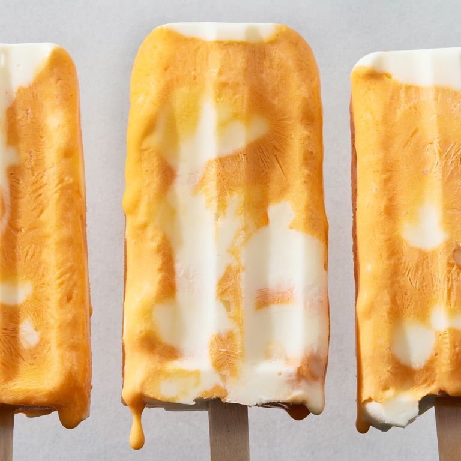

Cuisine: American
Cook Time: 8hrs 10mins
Serving Size: 10
Calories: 296
Author: Mary Rupp
Ingredients
Orange Base
12oz frozen orange juice concentrate
1/2 cup heavy cream
1/4 cup granulated sugar
1/2 tsp pure vanilla extract
1/8 tsp kosher salt
Orange food color is optional
Vanilla Yoghurt Base & Assembly
1 cup full-fat plain yoghurt
1 cup heavy cream
1/4 cup granulated sugar
1 tsp pure vanilla extract
1/8 tsp kosher salt
Instructions
Orange Base
In a blender, blend orange juice concentrate, cream, granulated sugar, vanilla, and salt on medium-low speed until combined.
Add a little bit of food coloring (if using) and continue to blend until desired color is reached. Transfer to a medium bowl. Cover and refrigerate until ready to use.
Vanilla Yoghurt Base & Assembly
In another medium bowl, whisk yogurt, cream, granulated sugar, vanilla, and salt. Cover and refrigerate until ready to use.
Pour 1 heaping tablespoon yogurt base into a 3-oz. ice pop mold, then pour in 1 tablespoon orange base.
Repeat with yogurt and orange bases until you have 10 ice pops.
Cover and insert sticks.
Freeze until firm, at least 8 hours or up to overnight.
Dip molds briefly into warm water to release pops.